Hoe bid je
Stap voor stap, het gebed van de Profeet ﷺ. Lees wat het lichaam doet en wat je zegt bij elke stap.
Wat heb je nodig voordat je bidt?1
- 1Is de gebedstijd begonnen? Elk gebed heeft zijn eigen tijd. Als de tijd begonnen is, mag je het bidden. Voor de tijd is het gebed niet geldig, dus kijk eerst of de tijd begonnen is. De gebedstijden vind je hieronder.
- 2Heb je wudu? Je kunt alleen bidden met wudu. Sommige dingen breken je wudu, bijvoorbeeld naar het toilet gaan of diep slapen, en dan doe je de wudu opnieuw. Na djanaba, menstruatie of kraambed is wudu niet genoeg: dan heb je ghusl nodig, het wassen van het hele lichaam. Beide worden hieronder uitgelegd.
- 3Zijn je lichaam, kleding en plek schoon? Je lichaam, je kleding en de plek waar je bidt moeten vrij zijn van onreinheid, zoals urine of ontlasting. Is er iets, was het dan weg voordat je bidt. Veel mensen bidden op een gebedskleed, zodat de plek schoon is.
- 4Ben je goed bedekt? Tijdens het gebed moeten sommige delen van het lichaam bedekt zijn: bij een man van de navel tot de knie, bij een vrouw het hele lichaam behalve het gezicht en de handen. De kleding mag niet zo dun zijn dat de huid erdoorheen schijnt.
- 5Naar welke kant bid je? Moslims over de hele wereld bidden met hun gezicht naar de Ka‘ba in Mekka. Die richting heet de qibla. Thuis vind je haar met een kompas-app of door het in de moskee te vragen.
- 6Welk gebed ga je bidden? Het voornemen is de beslissing in je hart welk gebed je bidt, bijvoorbeeld Dhoehr. Je hoeft het niet hardop te zeggen: het in je hart weten is genoeg.
Wanneer bid je elk gebed?2
Elk gebed heeft zijn eigen tijd. Je bidt het als die tijd begonnen is, niet eerder.
| Gebed | Begint | Eindigt |
|---|---|---|
| Fadjr | Bij de echte dageraad: het licht dat zich over de oostelijke horizon verspreidt. | Als de zon begint op te komen. |
| Dhoehr | Als de zon haar hoogste punt voorbij is en naar het westen zakt. | Als de schaduw van een voorwerp even lang is als het voorwerp (plus de middagschaduw). |
| ‘Asr | Als de tijd van Dhoehr eindigt. | Het best voordat de zon geel wordt. Met een echte reden tot zonsondergang. |
| Maghrib | Bij zonsondergang. | Als de rode gloed aan de hemel na zonsondergang weg is. |
| ‘Isha | Als de rode gloed aan de hemel weg is. | Om middernacht. |
Middernacht is het midden tussen zonsondergang en Fadjr. Voorbeeld: zonsondergang om 17:00 en Fadjr om 05:00, dan is middernacht om 23:00.2
Hoe weet je de tijden? Tegenwoordig volgen de meeste mensen de tijden van een moskee, die ze vaak in een kalender of een app deelt. Dat is goed, zolang je de mensen die de moskee leiden vertrouwt. Als je kunt, mag je ook zelf naar de tekenen aan de hemel kijken.3
Bereken de tijden voor jouw plaats
Typ de stad of het dorp waar je woont. Je krijgt de tijden voor de hele maand en je kunt ze downloaden.
Instellingen van de berekening
Voorbeeld
| Datum | Fadjr | Zonsopgang | Dhoehr | ‘Asr | Maghrib | ‘Isha | Middernacht |
|---|
GeoNames (CC BY 4.0) · © OpenStreetMap
Hoe doe je de volledige wassing (ghusl)?
Bij de ghusl was je je hele lichaam. Deze 3 stappen zijn genoeg.4
Wanneer is ghusl nodig?5
- Na intimiteit tussen man en vrouw.
- Als je djoenoeb bent geworden (in grote onreinheid), wakker of in je slaap.
- Als de menstruatie voorbij is.
- Als het kraambed (bloedverlies na een bevalling) voorbij is.
- Als iemand moslim wordt: volgens sommige geleerden verplicht, volgens vele anderen aanbevolen.
- 1
Voornemen
Neem je in je hart voor om je te reinigen.
- 2
Mond en neus
Spoel je mond en je neus met water.
- 3
Het hele lichaam
Was je hele lichaam één keer. Het water moet de haarwortels bereiken en verborgen plekken, zoals de oksels en achter de knieën.
De volledige ghusl (de beste manier)4
- Voornemen in je hart. Zeg Bismillah, was je handen drie keer en was dan je schaamdelen.
- Doe een volledige wudu zoals voor het gebed.
- Giet drie keer water over je hoofd en wrijf door je haar zodat het water de wortels bereikt.
- Was de rest van je lichaam, eerst de rechterkant, dan de linker.
Hoe doe je de wudu?
Zonder wudu is het gebed niet geldig. Gebruik schoon water. Het getal is hoe vaak je het doet: 3 keer is de soennah, 1 keer is genoeg. Was eerst je rechterarm en je rechtervoet.81
Altijd in deze volgorde, van 1 tot en met 9, zonder lange pauze ertussen.
- 1
Voornemen en Bismillah
Neem je in je hart voor om je te reinigen. Zeg: Bismillah (in de naam van Allah).
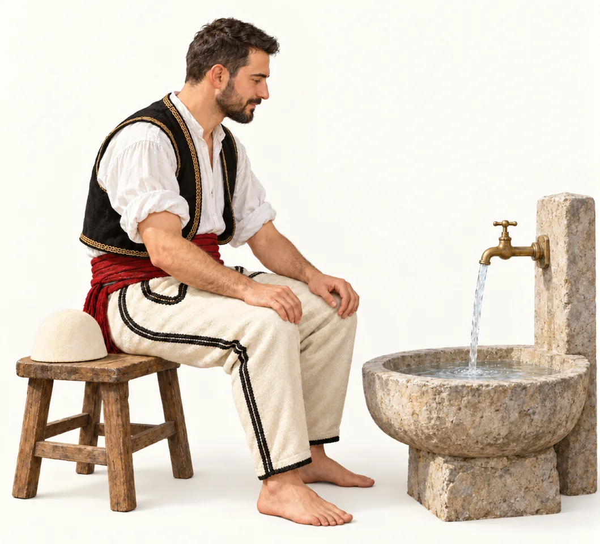
- 2
Handen 3×
Was je handen tot en met de polsen.
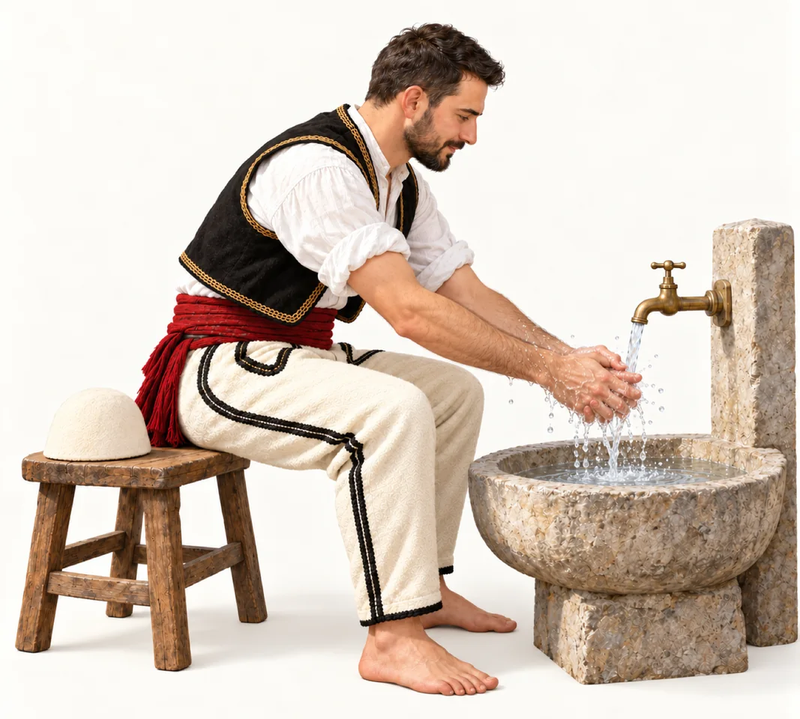
- 3
Mond 3×
Neem water in je mond, spoel het rond en spuug het uit.
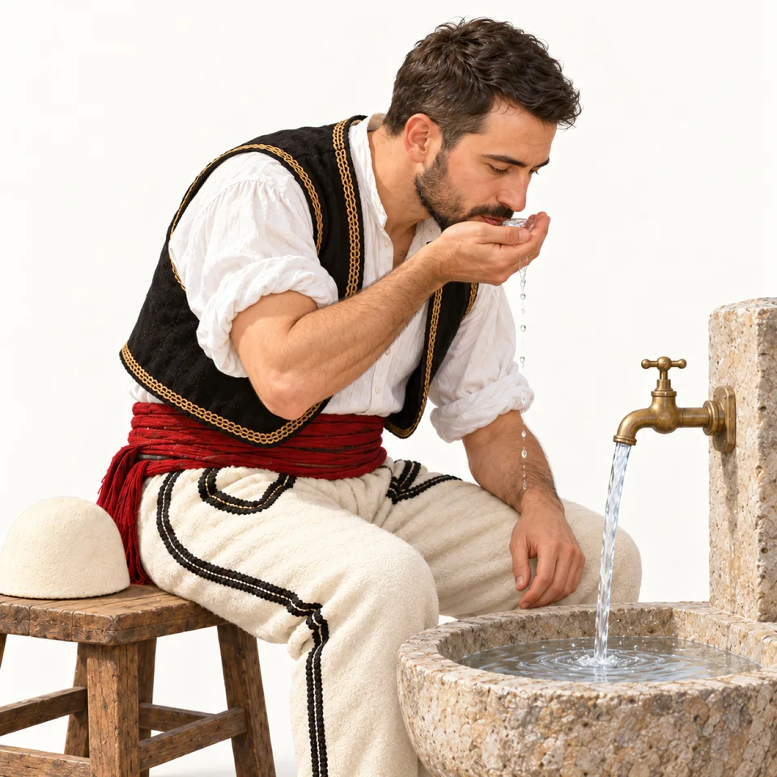
- 4
Neus 3×
Snuif een beetje water op en snuit het uit met je linkerhand.
- 5
Gezicht 3×
Van je haargrens tot onder je kin, en van oor tot oor.
- 6
Armen 3×
Van je vingertoppen tot en met je ellebogen. Eerst rechts, dan links.
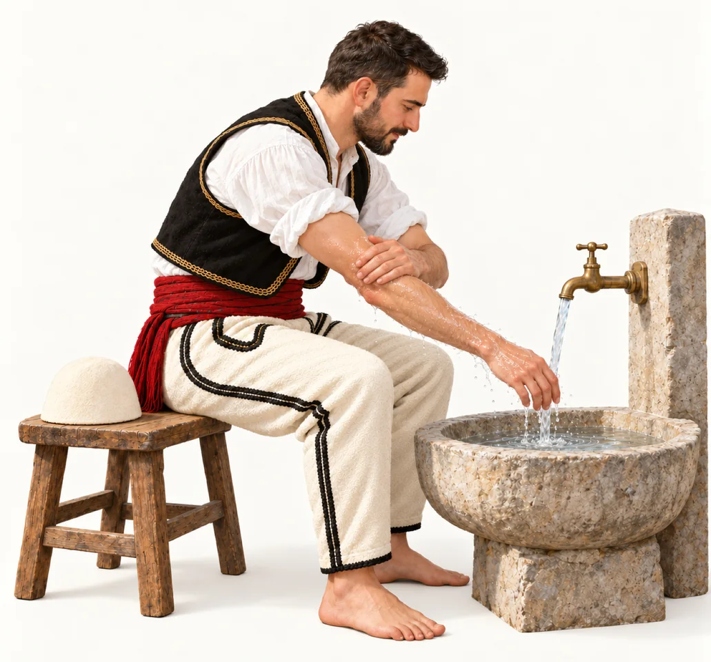
1. rechts 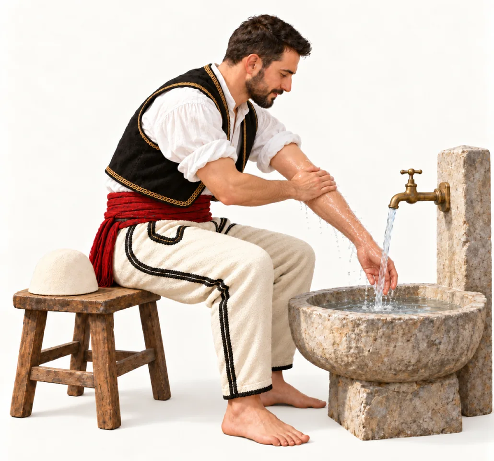
2. links - 7
Hoofd 1×
Strijk met handen nat van vers water over je hoofd, van voor tot waar je haar achter eindigt en weer terug. De nek strijk je niet.9
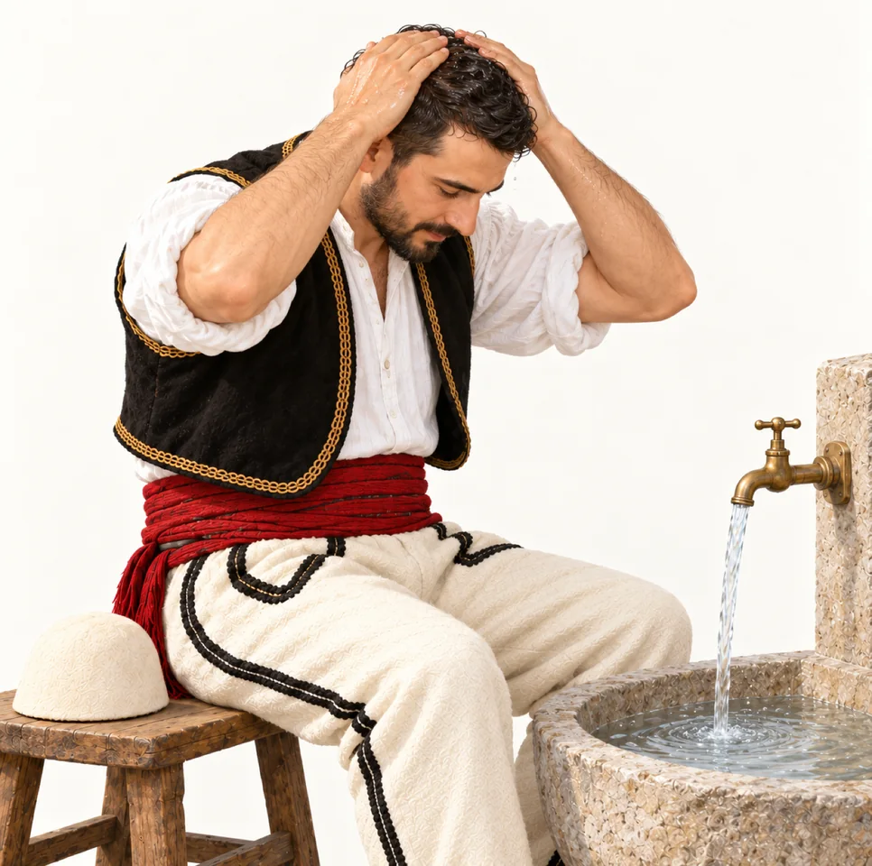
- 8
Oren 1×
Wijsvingers aan de binnenkant, duimen aan de achterkant van je oren.
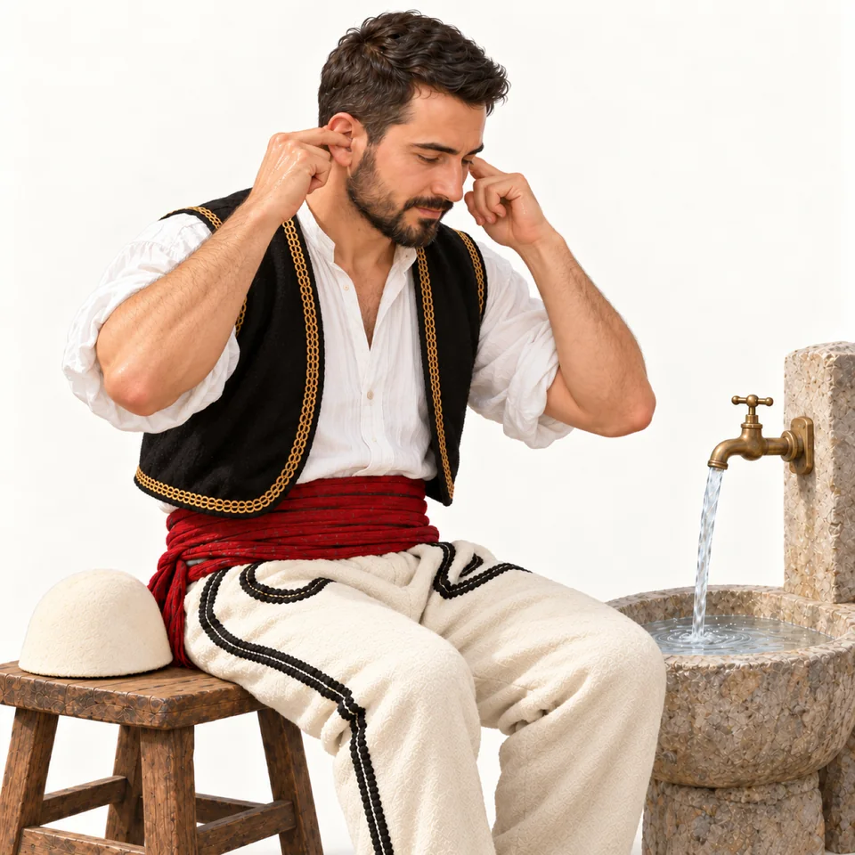
- 9
Voeten 3×
Tot en met je enkels. Eerst rechts, dan links.
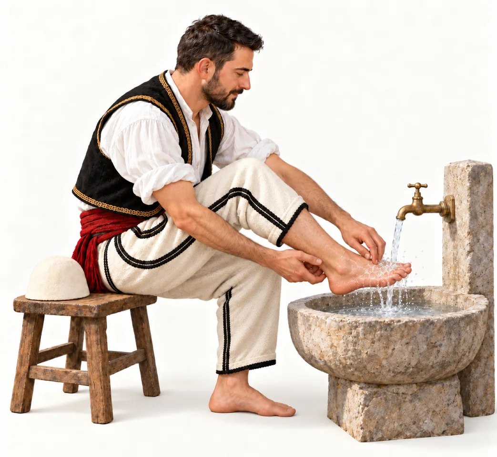
1. rechts 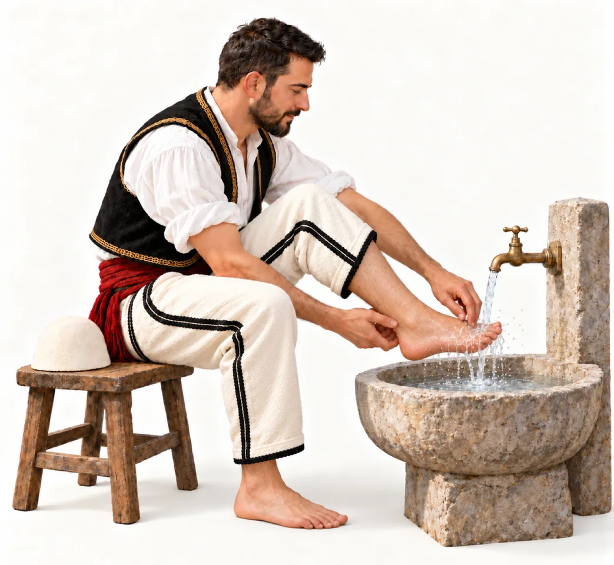
2. links
Praktisch om te onthouden
- Je armen en gezicht zijn na de wudu vaak nog nat en kunnen op de vloer druppen. Heb daarom altijd een aparte handdoek voor de wudu.
- Stroop je mouwen op voordat je begint, zodat je je armen tot en met de ellebogen kunt wassen zonder je kleren nat te maken.
- Trek je sokken uit voordat je begint, zodat je je voeten makkelijk kunt wassen.
Na de wassing zeg je:
أشهد أن لا إله إلا الله وحده لا شريك له، وأشهد أن محمدا عبده ورسوله
Ash-hadu an la ilaha ill-Allah wahdahu la sharika lah, wa ash-hadu anna Muhammadan ‘abduhu wa rasuluhu
Betekenis: Ik getuig dat er geen god is behalve Allah alleen, zonder partner, en ik getuig dat Mohammed Zijn dienaar en Boodschapper is.
Je mag toevoegen:
اللهم اجعلني من التوابين واجعلني من المتطهرين
Allahumma ij‘alni min al-tawwabina wa’j‘alni min al-mutatahhirin
Betekenis: O Allah, maak mij een van hen die berouw tonen en van hen die zich reinigen.
Een vrouw strijkt over haar haar, los of gevlochten, van voor op het hoofd tot waar het haar achter eindigt. Ze hoeft niet de hele lengte te strijken. Verder is de wudu voor mannen en vrouwen hetzelfde.
Wanneer moet je de wudu opnieuw doen?101112
- Alles wat uit de twee uitgangen komt: urine, ontlasting en een wind.
- Diepe slaap, als je het niet zou merken als er iets uitkomt. Lichte slaap verbreekt hem niet.
- Het bewustzijn verliezen, bijvoorbeeld flauwvallen.
- Je geslachtsdeel met je hand aanraken, met verlangen.
- Kamelenvlees eten.
Twijfel je? Dan is je wudu nog geldig.13
Een vrouw aanraken verbreekt de wudu niet, zolang er niets uitkomt.10
Na djanaba, menstruatie of kraambed is de wudu niet genoeg. Dan doe je ghusl (zie hierboven).4
Hoeveel rak‘ahs heeft elk gebed?
| Gebed | Soennah ervoor | Fard | Soennah erna |
|---|---|---|---|
| Fadjr | 2 | 2 | – |
| Dhoehr | 4 | 4 | 2 |
| ‘Asr | – | 4 | – |
| Maghrib | – | 3 | 2 |
| ‘Isha | – | 4 | 2 |
- Fard: als je thuis bent (niet op reis).1415
- De vaste soennah-gebeden zijn 12 rak‘ahs per dag. Wie ze steeds bidt, voor hem wordt een huis in het Paradijs gebouwd.16
- De 4 rak‘ahs vóór Dhoehr bid je per twee (2 + 2).17
- ‘Asr heeft geen vaste soennah. 4 rak‘ahs ervoor bidden is goed, maar met minder beloning.16
- Op reis laat je de soennah van Dhoehr, Maghrib en ‘Isha weg. De soennah van Fadjr en de Witr bid je ook op reis.18
Hoe ziet het hele gebed eruit?
Elke kaart is één stap. Klik op een kaart voor de volledige uitleg verderop.15
Kies hoeveel rak‘ahs het gebed heeft:
 KlaarstaanRichting de qibla, voornemen in je hart2
KlaarstaanRichting de qibla, voornemen in je hart2 TakbierAllahu akbar3
TakbierAllahu akbar3 Handen op de borstOpeningsdoea4Al-FatihaIn elke rak‘ah5Nog een soeraOf enkele verzen6
Handen op de borstOpeningsdoea4Al-FatihaIn elke rak‘ah5Nog een soeraOf enkele verzen6 Roekoe‘Subhana Rabbiy al-‘Azim7Sta rechtopSami‘a Allahu liman hamidah8
Roekoe‘Subhana Rabbiy al-‘Azim7Sta rechtopSami‘a Allahu liman hamidah8 SoedjoedSubhana Rabbiy al-A‘la9
SoedjoedSubhana Rabbiy al-A‘la9 Kort zittenRabbi ighfir li10Tweede soedjoedSubhana Rabbiy al-A‘la11
Kort zittenRabbi ighfir li10Tweede soedjoedSubhana Rabbiy al-A‘la11 Sta opAllahu akbar
Sta opAllahu akbar

 KlaarstaanRichting de qibla, voornemen in je hart2TakbierAllahu akbar3Handen op de borstOpeningsdoea4Al-FatihaIn elke rak‘ah5Nog een soeraOf enkele verzen6Roekoe‘Subhana Rabbiy al-‘Azim7Sta rechtopSami‘a Allahu liman hamidah8SoedjoedSubhana Rabbiy al-A‘la9Kort zittenRabbi ighfir li10Tweede soedjoedSubhana Rabbiy al-A‘la11Sta opAllahu akbar
KlaarstaanRichting de qibla, voornemen in je hart2TakbierAllahu akbar3Handen op de borstOpeningsdoea4Al-FatihaIn elke rak‘ah5Nog een soeraOf enkele verzen6Roekoe‘Subhana Rabbiy al-‘Azim7Sta rechtopSami‘a Allahu liman hamidah8SoedjoedSubhana Rabbiy al-A‘la9Kort zittenRabbi ighfir li10Tweede soedjoedSubhana Rabbiy al-A‘la11Sta opAllahu akbar KlaarstaanRichting de qibla, voornemen in je hart2TakbierAllahu akbar3Handen op de borstOpeningsdoea4Al-FatihaIn elke rak‘ah5Nog een soeraOf enkele verzen6Roekoe‘Subhana Rabbiy al-‘Azim7Sta rechtopSami‘a Allahu liman hamidah8SoedjoedSubhana Rabbiy al-A‘la9Kort zittenRabbi ighfir li10Tweede soedjoedSubhana Rabbiy al-A‘la11Sta opAllahu akbar
KlaarstaanRichting de qibla, voornemen in je hart2TakbierAllahu akbar3Handen op de borstOpeningsdoea4Al-FatihaIn elke rak‘ah5Nog een soeraOf enkele verzen6Roekoe‘Subhana Rabbiy al-‘Azim7Sta rechtopSami‘a Allahu liman hamidah8SoedjoedSubhana Rabbiy al-A‘la9Kort zittenRabbi ighfir li10Tweede soedjoedSubhana Rabbiy al-A‘la11Sta opAllahu akbarDe kaarten hierboven, in één oogopslag.
Korte samenvatting: hoe de rak‘ahs in elkaar passen
1 rak‘ah = één hele ronde
Van staan, via roekoe‘ en de twee neerknielingen, tot je weer opstaat. Elke cirkel hieronder is één rak‘ah.
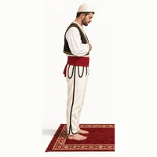
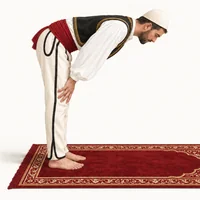
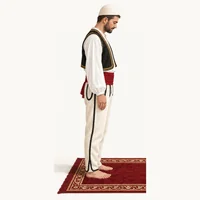
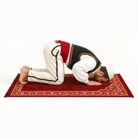
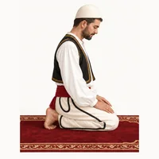
2Laatste zitSalamEerste zit = tashahhud en salawat. Laatste zit = tashahhud, salawat en doea, dan de salam. In de derde en vierde rak‘ah reciteer je alleen Al-Fatiha.
Voordat je begint15
Richt je naar de qibla
Sta met je gezicht naar de Ka‘ba. Dit moet bij elk gebed, verplicht of vrijwillig.
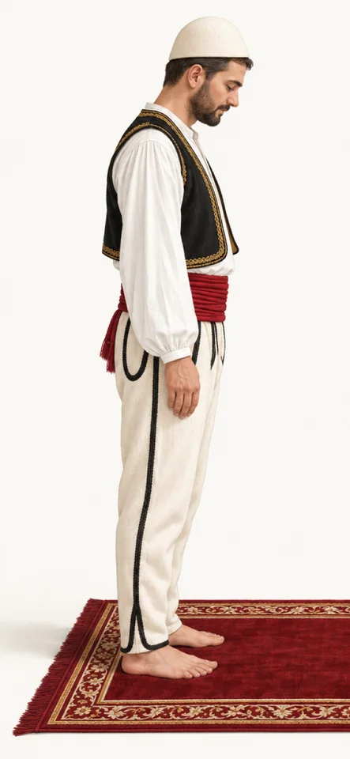
Sta rechtop
Bid staand. Bij de verplichte gebeden is dit verplicht.
Neem het voornemen in je hart
Weet in je hart welk gebed je gaat bidden. Spreek het voornemen niet hardop uit, want dat is een vernieuwing (bid‘a).
De eerste rak‘ah
Takbier
Hef je handen met gestrekte vingers tot je schouders of soms je oorlellen, en zeg:
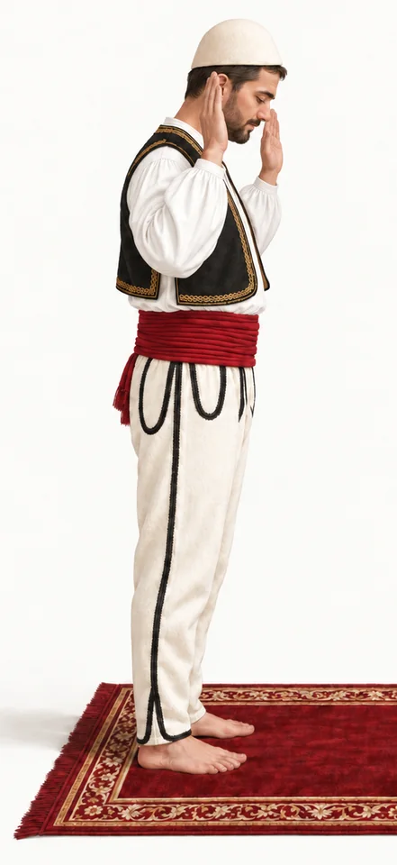
Je zegt:
الله أكبر
Allahu akbar
Betekenis: Allah is de Grootste
Handen op de borst
Leg je rechterhand over je linkerhand, op je borst.
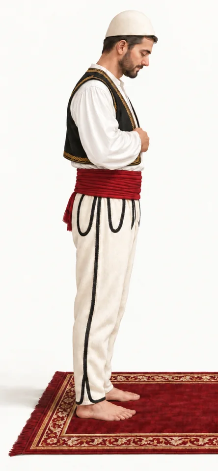
Openingsdoea
De bekendste openingswoorden zijn:
Je zegt:
سبحانك اللهم وبحمدك، وتبارك اسمك وتعالى جدك، ولا إله غيرك
Subhanaka Allahumma wa bihamdika, wa tabaraka ismuka wa ta‘ala jadduka, wa la ilaha ghayruka
Betekenis: Glorie en lof zij U, o Allah. Gezegend is Uw naam en verheven is Uw majesteit, en er is geen god behalve U.
Zoek bescherming
Zeg dan:
Je zegt:
أعوذ بالله من الشيطان الرجيم
A‘udhu Billahi min al-Shaytan ir-rajim
Betekenis: Ik zoek bescherming bij Allah tegen de vervloekte satan
Basmala
Zeg het zachtjes:
Je zegt:
بسم الله الرحمن الرحيم
Bismillah ar-Rahman ar-Rahim
Betekenis: In de naam van Allah, de Erbarmer, de Meest Barmhartige
Al-Fatiha
Reciteer heel Al-Fatiha en pauzeer aan het einde van elk vers. Het is verplicht in elke rak‘ah.
Nog een soera
Reciteer in de eerste twee rak‘ahs nog een soera of enkele verzen. Dit is soenna.
Roekoe‘ (buigen)
Wacht even, hef je handen en zeg Allahu akbar. Buig met je handen op je knieën, de vingers gespreid en de rug recht, en blijf tot het lichaam rustig is. Zeg dit 3 keer of vaker:
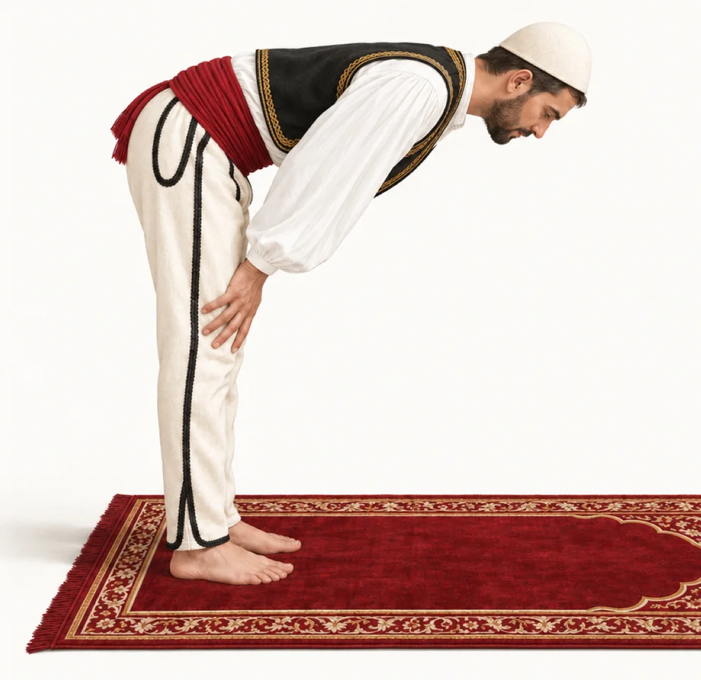
Je zegt:
سبحان ربي العظيم
Subhana Rabbiy al-‘Azim
Betekenis: Glorie zij mijn Heer, de Almachtige
Kom weer overeind
Hef je handen terwijl je de eerste zin zegt. Sta recht tot elk bot weer op zijn plaats is, en zeg dan de tweede zin.
Je zegt:
سمع الله لمن حمده
Sami‘a Allahu liman hamidah
Betekenis: Allah hoort wie Hem prijst
Je zegt:
ربنا ولك الحمد
Rabbana wa laka al-hamd
Betekenis: Onze Heer, aan U komt alle lof toe
Soedjoed (neerknielen)
Zeg Allahu akbar en ga naar beneden, handen vóór de knieën. Handpalmen plat op de grond, vingers bij elkaar en naar de qibla, op schouderhoogte. Houd de onderarmen van de grond. Neus, voorhoofd, handpalmen, knieën en tenen raken de grond, hielen tegen elkaar. Zeg dit 3 keer of vaker:
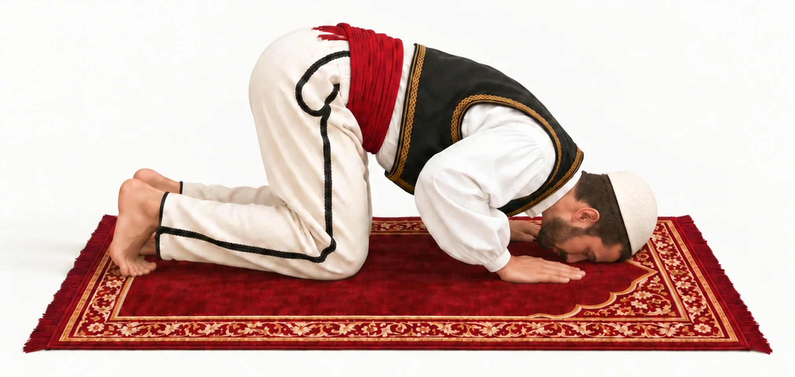
Je zegt:
سبحان ربي الأعلى
Subhana Rabbiy al-A‘la
Betekenis: Glorie zij mijn Heer, de Allerhoogste
Zit tussen de twee neerknielingen
Zeg Allahu akbar en zit op je linkervoet, met de rechtervoet rechtop en de tenen naar de qibla. Zeg:
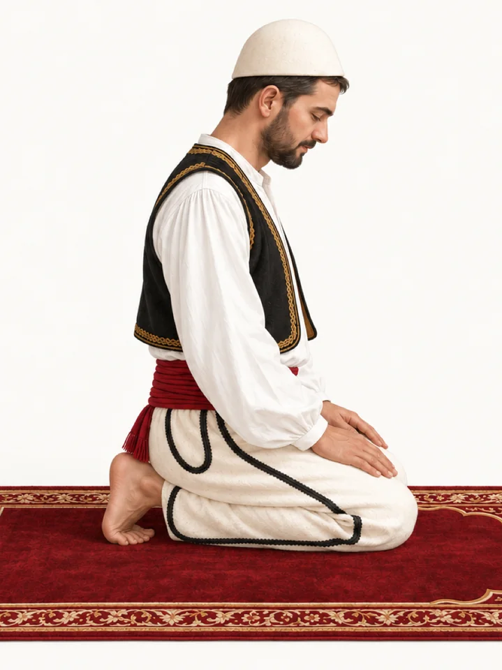
Je zegt:
اللهم اغفر لي، وارحمني، واجبرني، وارفعني، وعافني، وارزقني
Allahumma ighfir li warhamni wajburni, warfa‘ni, wa‘afini warzuqni
Betekenis: O Allah, vergeef mij, ontferm U over mij, versterk mij, verhef mij, bescherm mij en geef mij levensonderhoud
Tweede neerknieling
Zeg Allahu akbar en doe hetzelfde als bij de eerste neerknieling.
Kort rusten, dan opstaan
Zeg Allahu akbar en zit even. Sta dan op voor de tweede rak‘ah, steunend op je vuisten zoals iemand die deeg kneedt.
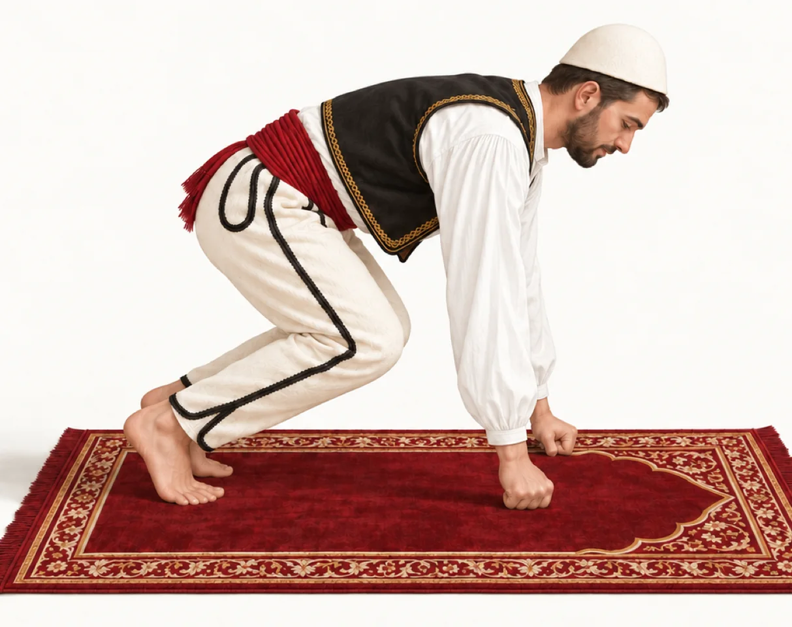
De tweede rak‘ah
Zoals de eerste
Bid hem zoals de eerste rak‘ah, maar zonder de openingsdoea, en korter.
Al-Fatiha
Reciteer heel Al-Fatiha en pauzeer aan het einde van elk vers. Het is verplicht in elke rak‘ah.
Nog een soera
Reciteer in de eerste twee rak‘ahs nog een soera of enkele verzen. Dit is soenna.
Roekoe‘ (buigen)
Wacht even, hef je handen en zeg Allahu akbar. Buig met je handen op je knieën, de vingers gespreid en de rug recht, en blijf tot het lichaam rustig is. Zeg dit 3 keer of vaker:
Je zegt:
سبحان ربي العظيم
Subhana Rabbiy al-‘Azim
Betekenis: Glorie zij mijn Heer, de Almachtige
Kom weer overeind
Hef je handen terwijl je de eerste zin zegt. Sta recht tot elk bot weer op zijn plaats is, en zeg dan de tweede zin.
Je zegt:
سمع الله لمن حمده
Sami‘a Allahu liman hamidah
Betekenis: Allah hoort wie Hem prijst
Je zegt:
ربنا ولك الحمد
Rabbana wa laka al-hamd
Betekenis: Onze Heer, aan U komt alle lof toe
Soedjoed (neerknielen)
Zeg Allahu akbar en ga naar beneden, handen vóór de knieën. Handpalmen plat op de grond, vingers bij elkaar en naar de qibla, op schouderhoogte. Houd de onderarmen van de grond. Neus, voorhoofd, handpalmen, knieën en tenen raken de grond, hielen tegen elkaar. Zeg dit 3 keer of vaker:
Je zegt:
سبحان ربي الأعلى
Subhana Rabbiy al-A‘la
Betekenis: Glorie zij mijn Heer, de Allerhoogste
Zit tussen de twee neerknielingen
Zeg Allahu akbar en zit op je linkervoet, met de rechtervoet rechtop en de tenen naar de qibla. Zeg:
Je zegt:
اللهم اغفر لي، وارحمني، واجبرني، وارفعني، وعافني، وارزقني
Allahumma ighfir li warhamni wajburni, warfa‘ni, wa‘afini warzuqni
Betekenis: O Allah, vergeef mij, ontferm U over mij, versterk mij, verhef mij, bescherm mij en geef mij levensonderhoud
Tweede neerknieling
Zeg Allahu akbar en doe hetzelfde als bij de eerste neerknieling.
Eerste tashahhud
Zit zoals tussen de twee neerknielingen. De rechterhand rust op de rechterdij en knie, de linkerhandpalm op de linkerdij en knie. Wijs met de wijsvinger naar de qibla en beweeg hem. Zeg:
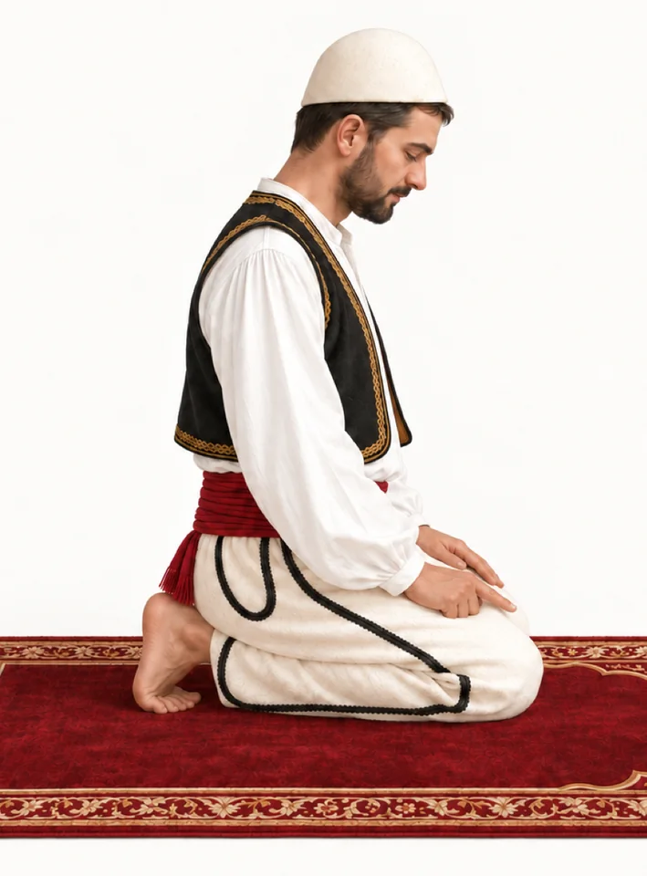
Je zegt:
التحيات لله، والصلوات، والطيبات، السلام عليك أيها النبي ورحمة الله وبركاته، السلام علينا وعلى عباد الله الصالحين، أشهد أن لا إله إلا الله، وأشهد أن محمدا عبده ورسوله
Al-tahiyyatu Lillahi wa’l-salawatu wa’l-tayyibat. Al-salamu ‘alayka ayyuha’l-Nabiyyu wa rahmat-Allahi wa barakatuhu. Al-salamu ‘alayna wa ‘ala ‘ibad-Illah il-salihin. Ash-hadu an la ilaha ill-Allah wa ash-hadu anna Muhammadan ‘abduhu wa rasuluhu.
Betekenis: Alle groeten, gebeden en goede woorden komen Allah toe. Vrede zij met u, o Profeet, en de barmhartigheid van Allah en Zijn zegeningen. Vrede zij met ons en met de rechtschapen dienaren van Allah. Ik getuig dat er geen god is behalve Allah, en ik getuig dat Mohammed Zijn dienaar en Zijn Boodschapper is.
Salawat
Zend dan gebeden over de Profeet ﷺ:
Je zegt:
اللهم صل على محمد وعلى آل محمد، كما صليت على إبراهيم وعلى آل إبراهيم، إنك حميد مجيد، اللهم بارك على محمد وعلى آل محمد، كما باركت على إبراهيم وعلى آل إبراهيم، إنك حميد مجيد
Allahumma salli ‘ala Muhammad wa ‘ala ali Muhammad kama salayta ‘ala Ibrahim wa ‘ala ali Ibrahim, innaka hamidun majid. Allahumma barik ‘ala Muhammad wa ‘ala ali Muhammad kama barakta ‘ala Ibrahim wa ‘ala ali Ibrahim, innaka hamidun majid.
Betekenis: O Allah, zend gebeden over Mohammed en over de familie van Mohammed, zoals U gebeden zond over Ibrahim en over de familie van Ibrahim. U bent werkelijk de Geprezene, vol Glorie. O Allah, zegen Mohammed en de familie van Mohammed, zoals U Ibrahim en de familie van Ibrahim zegende. U bent werkelijk de Geprezene, vol Glorie.
De derde en vierde rak‘ah
Sta op
Zeg Allahu akbar terwijl je nog zit en sta op met behulp van je handen. Reciteer alleen Al-Fatiha. Je mag een vers of meer toevoegen. Maghrib heeft 3 rak‘ahs; Dhoehr, ‘Asr en ‘Isha hebben er 4.
Qoenoet
In het witr-gebed mag je de qoenoet-doea zeggen vóór de roekoe‘, en in tijden van rampspoed na het opstaan uit de roekoe‘.
Roekoe‘ (buigen)
Wacht even, hef je handen en zeg Allahu akbar. Buig met je handen op je knieën, de vingers gespreid en de rug recht, en blijf tot het lichaam rustig is. Zeg dit 3 keer of vaker:
Je zegt:
سبحان ربي العظيم
Subhana Rabbiy al-‘Azim
Betekenis: Glorie zij mijn Heer, de Almachtige
Kom weer overeind
Hef je handen terwijl je de eerste zin zegt. Sta recht tot elk bot weer op zijn plaats is, en zeg dan de tweede zin.
Je zegt:
سمع الله لمن حمده
Sami‘a Allahu liman hamidah
Betekenis: Allah hoort wie Hem prijst
Je zegt:
ربنا ولك الحمد
Rabbana wa laka al-hamd
Betekenis: Onze Heer, aan U komt alle lof toe
Soedjoed (neerknielen)
Zeg Allahu akbar en ga naar beneden, handen vóór de knieën. Handpalmen plat op de grond, vingers bij elkaar en naar de qibla, op schouderhoogte. Houd de onderarmen van de grond. Neus, voorhoofd, handpalmen, knieën en tenen raken de grond, hielen tegen elkaar. Zeg dit 3 keer of vaker:
Je zegt:
سبحان ربي الأعلى
Subhana Rabbiy al-A‘la
Betekenis: Glorie zij mijn Heer, de Allerhoogste
Zit tussen de twee neerknielingen
Zeg Allahu akbar en zit op je linkervoet, met de rechtervoet rechtop en de tenen naar de qibla. Zeg:
Je zegt:
اللهم اغفر لي، وارحمني، واجبرني، وارفعني، وعافني، وارزقني
Allahumma ighfir li warhamni wajburni, warfa‘ni, wa‘afini warzuqni
Betekenis: O Allah, vergeef mij, ontferm U over mij, versterk mij, verhef mij, bescherm mij en geef mij levensonderhoud
Tweede neerknieling
Zeg Allahu akbar en doe hetzelfde als bij de eerste neerknieling.
De vierde rak‘ah
Bij Dhoehr, ‘Asr en ‘Isha sta je op en bid je de vierde rak‘ah zoals de derde: alleen Al-Fatiha, dan roekoe‘ en de twee neerknielingen.
Het einde van het gebed
Laatste tashahhud
Zit met de linkervoet onder het rechterbeen en de rechtervoet rechtop (tawarroek). Zeg de tashahhud en de salawat, en zoek dan bescherming tegen vier dingen:
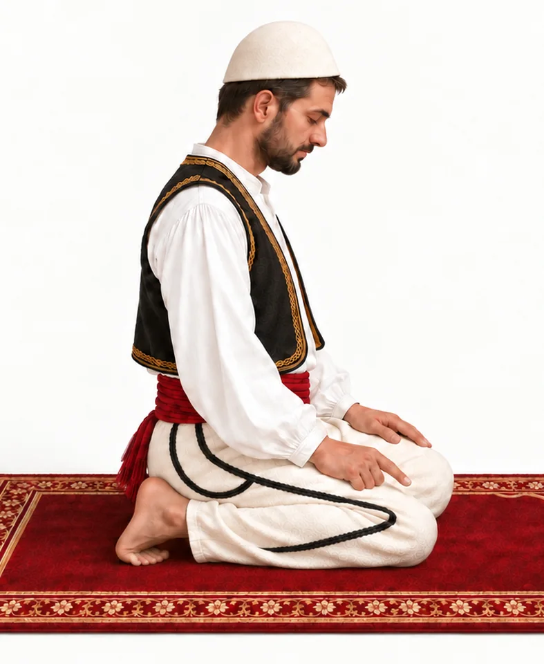
Je zegt:
اللهم إني أعوذ بك من عذاب جهنم، ومن عذاب القبر، ومن فتنة المحيا والممات، ومن شر فتنة المسيح الدجال
Allahumma inni a‘udhu bika min ‘adhab Jahannam wa min ‘adhab al-qabri wa min fitnat il-mahya wa’l-mamat, wa min sharri fitnat il-masih al-dajjal
Betekenis: O Allah, ik zoek bescherming bij U tegen de straf van de Hel, tegen de straf van het graf, tegen de beproevingen van het leven en de dood, en tegen het kwaad van de beproeving van de Dadjal
Je eigen doea
Vraag Allah vóór de salam wat je maar wilt.
Taslim
Draai je gezicht naar rechts, zodat je rechterwang te zien is, en zeg de woorden hieronder. Doe daarna hetzelfde naar links.
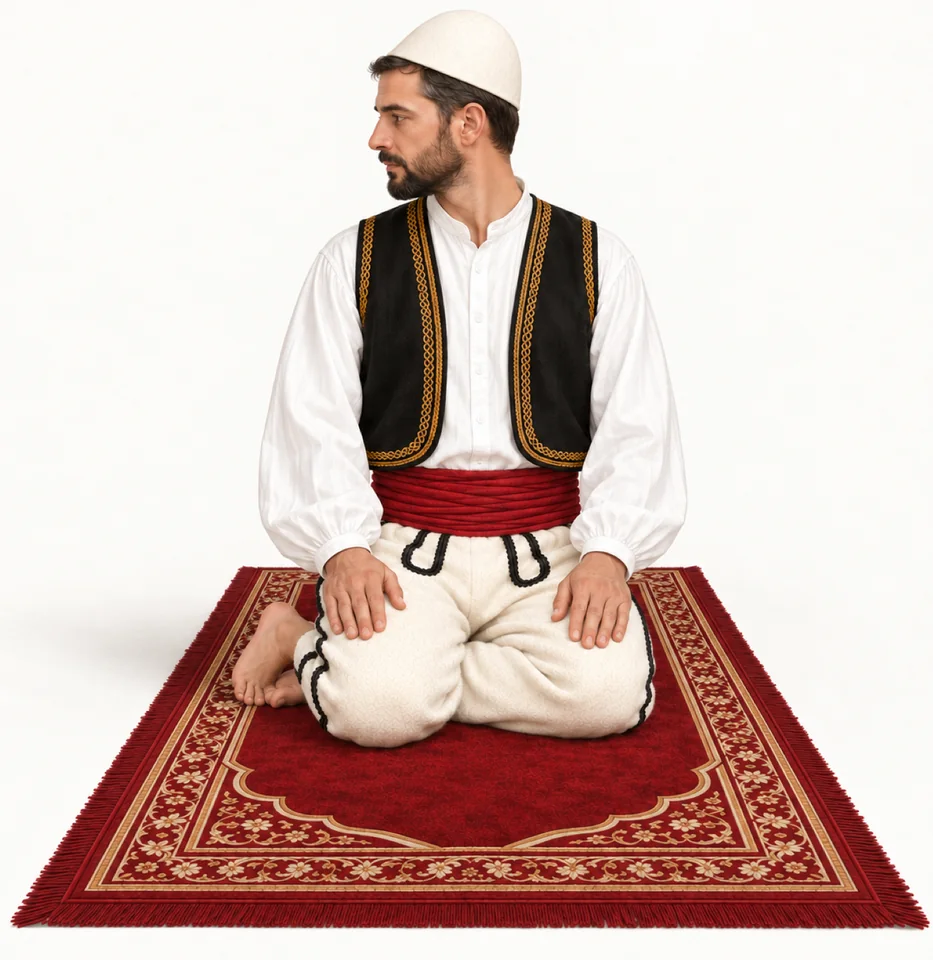
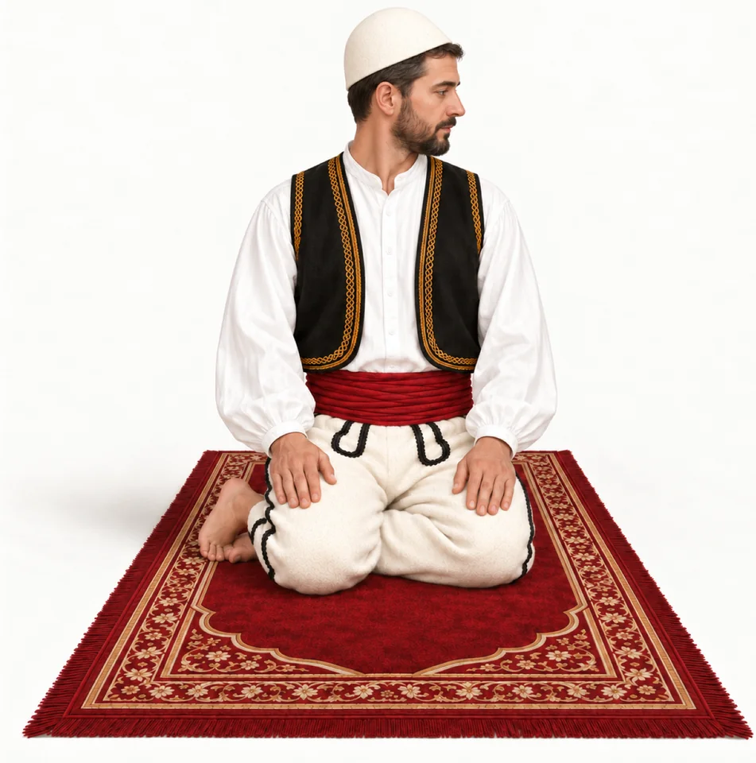
Je zegt:
السلام عليكم ورحمة الله وبركاته
Al-Salamu ‘alaykum wa rahmat-Allahi wa barakatuhu
Betekenis: Vrede zij met jullie, en de barmhartigheid van Allah en Zijn zegeningen
Woorden van het gebed
Wat de woorden op deze pagina betekenen.
- Salahصلاة
- Het gebed met vaste bewegingen en woorden, vijf keer per dag.
- Rak‘ahركعة
- Eén ronde van het gebed: staan, roekoe‘ en twee keer neerknielen.
- Fardفرض
- Verplicht. Deze rak‘ahs moet je bidden.
- Soennahسنة
- Wat de Profeet ﷺ deed. Soennah-rak‘ahs zijn niet verplicht, maar heel goed.
- Witrوتر
- Een gebed met een oneven aantal rak‘ahs, na het ‘Isha-gebed.
- Qiblaقبلة
- De richting van de Ka‘ba in Mekka, waar alle moslims naartoe bidden.
- Takbierتكبير
- “Allahu akbar” zeggen: Allah is de Grootste.
- Roekoe‘ركوع
- De buiging, met je handen op je knieën.
- Soedjoedسجود
- Als je voorhoofd en neus op de grond zijn.
- Tashahhudتشهد
- De getuigenis die je zittend zegt: er is geen god dan Allah.
- Salawatصلوات
- Zegeningen vragen voor de Profeet ﷺ.
- Salamسلام
- Vrede. Met de salam sluit je het gebed af.
- Wuduوضوء
- De wassing voor het gebed: handen, mond, neus, gezicht, armen, hoofd, oren en voeten.
- Ghuslغسل
- De wassing van het hele lichaam.
- Doeaدعاء
- Een smeekbede in je eigen woorden of met vaste woorden.
- Soeraسورة
- Een hoofdstuk van de Koran. De Koran heeft 114 soera’s.
Bronnen
- IslamQA 107701: Conditions of the Validity of Prayer
- IslamQA 9940: What Are the Times of the Five Daily Prayers?
- IslamQA 139757: They differ concerning the timings of the prayer; who should they follow?
- IslamQA 82344: How to Make Ghusl for Major Impurity
- IslamQA 93027: What Makes Ghusl Obligatory?
- IslamQA 96925: Does a Shower Count as a Ghusl?
- IslamQA 70438: Dos and Don'ts during Menstruation
- IslamQA 11497: How to Make Wudu
- IslamQA 70120: Is Wiping Neck in Wudu Obligatory?
- IslamQA 14321: Does Changing Clothes Break Wudu?
- IslamQA 36889: Does Sleeping Break Wudu?
- IslamQA 82759: Does Touching the Private Part Invalidate Wudu?
- IslamQA 20330: Things that invalidate wudu
- IslamQA 210538: Wisdom behind Fajr prayer being two rak‘ahs
- IslamQA 13340: Description of the Prophet’s Prayer
- IslamQA 1048: Sunnah Prayers
- IslamQA 175137: Sunnah Prayers: 10 or 12?
- IslamQA 21467: Not doing regular Sunnah prayers whilst travelling apart from the Sunnah of Fajr